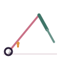

Fish Pose
Matsyasana
How to
Lie on your back, slide the hands beneath the hips, press into the forearms and lift the chest, letting the crown of the head rest lightly on the floor.
Benefits
- Opens the chest and throat
- Counters the effects of Shoulder Stand or slouched posture
- Improves breathing capacity
Practice
Hold for 3-5 breaths, keeping most of the weight in the forearms rather than the head.

Get the Asanas appFree, no ads, works offline
Google Play
General information, not medical advice. If you have a health condition or pain, talk to a doctor or qualified teacher first.